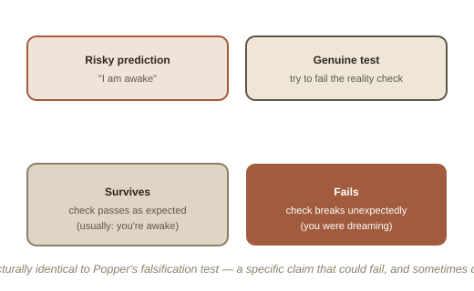

Chapter 9: What This Implies About Everything Else You're Sure Of
Every technique in this arc — reality testing, WILD, MILD, dream yoga's older version of the same habit — depends on one uncomfortable fact: while a dream is happening, it usually doesn't feel like a dream. It feels exactly, completely, as real as this sentence does right now. The only reason any of these methods work is that a dream's realism, however convincing, has actual seams — text that shifts, physics that bends to expectation, a check that fails when it shouldn't. Finding those seams is the whole practice. It's worth closing this topic by asking the question that naturally falls out of that: how do you know this moment isn't one too?
A very old question, wearing a new set of tools
This is, essentially, Descartes' evil demon and the "brain in a vat," already covered elsewhere in this library — except lucid dreaming turns the abstract thought experiment into something you can run an actual test against, tonight, repeatedly, with real data. A reality check performed while dreaming is, structurally, a falsification test in the exact sense Karl Popper meant it: a specific, genuine attempt to prove a claim wrong ("I am awake"), where the test could fail and sometimes does. Trying and failing to push a finger through your palm while dreaming is a real, repeatable disconfirmation — you made a risky prediction, and reality (or what felt like reality) didn't cooperate.

The asymmetry that should actually unsettle you a little
Here's the part worth sitting with rather than rushing past: you have run this exact test, successfully, every single time you've ever confirmed you were dreaming. You have never once run it and had waking life fail the check. That asymmetry feels like proof that waking life is simply, categorically different — solid where dreams are seam-riddled. But notice what that proof actually rests on: not some deeper access to certainty, only the fact that every check you've ever run in this life happened to pass. A completely convincing dream, by definition, is one where the checks haven't been run yet, or haven't been imagined yet, or where the "seams" the tradition would build a habit around noticing simply haven't come up. This isn't a claim that you're dreaming right now. It's the much narrower, harder-to-dismiss point that "I've never failed a check" and "I definitely can't be dreaming" are not quite the same sentence, no matter how much they feel like one from the inside.
Why this is a genuinely fitting place to end
Chapter 1 opened this topic with the driest possible proof that lucid dreaming is real: a signal, an EEG, a room next door. Nine chapters later, the same basic fact — that total conviction and actual accuracy can come apart, and the only way to find out is to build a specific habit of testing rather than trusting the feeling of certainty — turns out to reach much further than sleep. It's the same lesson Epistemology and Philosophy of Science, elsewhere in this library, arrive at from completely different directions: certainty is a feeling, not evidence, and the only real defense against being wrong in a way that feels exactly like being right is a standing habit of testing anyway.
Try this
Ideas for noticing or testing this in your own life.
- Try holding the asymmetry honestly, once, without spiraling on it: the point isn't to doubt everything constantly — it's to notice, briefly and clearly, that "this feels completely real" was also true of every dream you've ever had while you were in it.
- Notice where else in life you treat strong conviction as if it were the same thing as being right: a reality check works because it's a specific, external test, not a feeling — ask where a genuine, checkable test could replace a strong feeling somewhere else in your life too.
Worth pulling on?
A few loose threads from this chapter — if any of these genuinely grab you, that's a good sign of where to go next.
- This exact demon/dream problem, and Popper's falsifiability idea, are both covered in more depth from the philosophical side. → Already in the library: Epistemology and Philosophy of Science both build directly toward the ideas this closing chapter leans on.
- This is where the practical arc of this topic ends — nine chapters covering the proof, the techniques, the science, the old tradition, and finally what it implies. A genuinely complete topic, not one artificially stopped short.